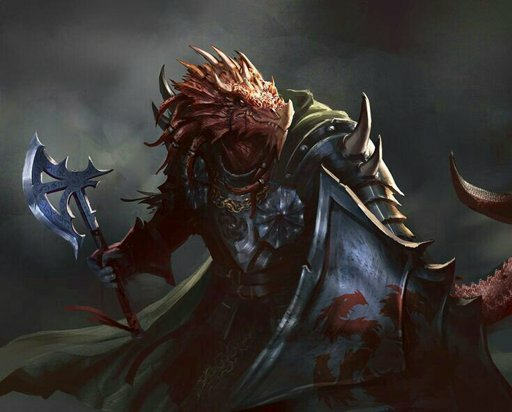
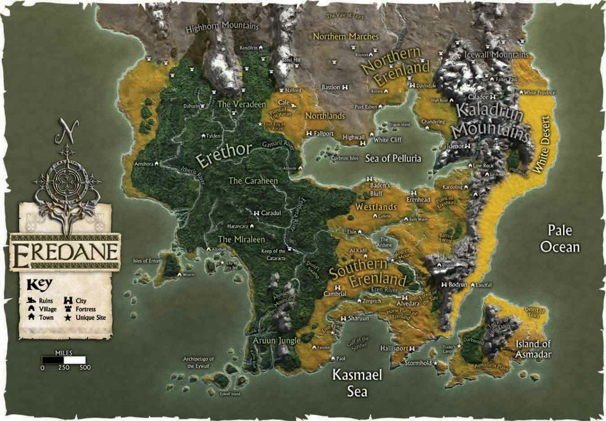

Novos Detalhes sobre os Draconatos
Adicionamos novas informações sobre a cultura e as habilidades dos Draconatos, uma raça imponente e nobre...
Leia Mais
Desvendando os Segredos de Mundos Esquecidos
Navegue pelo nosso mapa interativo e descubra as regiões, cidades e segredos que este vasto continente guarda.
Adicionamos novas informações sobre a cultura e as habilidades dos Draconatos, uma raça imponente e nobre...
Leia MaisDescubra os hábitos, o habitat e as lendas que envolvem essa magnífica criatura híbrida de leão e águia...
Leia MaisUm monstro lendário que é um dos mais famosos. Conheça sua história e poderes do Beholder...
Leia Mais